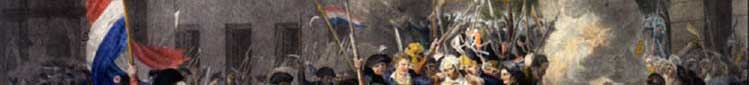

|  |
| |
 |
 |
 |
 |
|
Representing Women in the |
||||
|
Historians have most often used images as simple illustrations. However, as I have argued here and elsewhere, there is much to be gained by the use of visual sources as a mode of understanding.23 Certainly, the image provides useful documentary information about physical surroundings, costumes, social interactions and customs. In a sense, images bring to life what can only otherwise be imagined from a descriptive passage. Yet, to restrict the image to its documentary aspect is to miss the ways in which the image comments upon, interprets, and represents a particular topic or person. We may despair of ever knowing to our satisfaction how a particular image was viewed in the past, but is this problem any more intractable than that of determining the reader's response? Knowing what reading materials were published, and even who sold them or bought them, still does not answer the questions of how they were read: intensively or extensively, privately or collectively, in conventional or unconventional ways? Although image-makers certainly attempted to shape meanings and influence opinions, their efforts could not preclude the possibility of a resistant reading by a viewer or group of viewers. And, in contrast to printed matter, images invite, sometimes entice, and are often available for repeated re-viewing. We might venture to say that the “habitus” of an image as compared to a text nearly guarantees that its meaning will vary from moment to moment, age to age. Jack Censer is correct to protest “The simple fact of knowing the author, as opposed to knowing the date the image was created, can make little or no difference in certain circumstances. If one is interested in the meaning of an image for the public view of an event, the main point at issue, it seems to me, is how that image interrelates with other pictorial, textual, and verbal descriptions of the same thing.” Unquestionably, we need to know more about the context in which prints were made, sold, collected, and seen; to broaden, that is, our “vision of intertextuality.”24 Moreover, each image belongs to a wider field, about which much more needs to be studied. Images establish their own traditions, just as they draw upon and rework older ones. For example, there are allusions to the stoning of St. Stephen in the anonymous Punishment of Foulon [Image 2]; and, as Cameron pointed out, this suggests an artist with knowledge of artistic conventions, and a desire to encourage the viewer’s sympathy for Foulon.25 Thus, even works that appear to be “popular” or “naïve” can be rooted in the surrounding artistic environment and in pictorial traditions, often better acknowledged in elite genres. This dimension of art does not point in only one direction. In a bicentennial exhibition in 1989, the American artist Zuka replays the iconography of revolution in the 1790s, paying homage to her predecessors and to the contribution they made to a now 200-year-old pictorial tradition of modern revolution http://www.feministstudies.org. Yet, this is not an example of uninspired mimicry. As Linda Nochlin grasped, “At last—a woman artist to take possession of history and to position women as active participants within the historical process itself!”26 We could say that by locating women so centrally in the revolutionary process, Zuka is also engaging in an act of revision; but, at the same time, she is honoring the roles women actually played. Her vision is not a fiction, but another kind of invention, a “what if?” Like recent historians, Zuka uncovered a buried female contribution, and she is faithful to the facts unearthed in recent feminist scholarship. Still her vision of art as performance, as a series of tableaux vivants, is central to her representation of revolutionary action, as consisting of order and chaos, of joyful acts and sober realities. Similarly, no study of context or production can relieve the historian of the obligation to interpret the visual evidence. This requires abandoning the entrenched attitude that such interpretation is necessarily more suspect—and more “presentist” —than the interpretations we make of written evidence. While respecting the interpenetration of visual and verbal conventions, much more needs to be appreciated about the ability of images—and, not just “high art”—to solicit, persuade, and provoke meanings among their viewers. Finally, all of the images I have commented on present female bodies in public spaces. It is for this reason that I have elsewhere addressed the image in revolutionary culture as a variety of political argument.27 Consequently, we need to ask how they “constitute and transgress the gendered boundaries between the material and immaterial, the conscious and the unconscious, the personal and the political, the individual and the collective.”28 For, as Anne Norton has astutely observed, “in politics the body changes,” and nowhere is this more evident than in the case of women's presence in male-authorized public domains.29 Notes 23 See Antoine de Baecque, “The Allegorical image of France, 1750 - 1800: A Political Crisis of Representation,” cited in Landes, Visualizing the Nation, p. 7, and see also Ibid., pp. 1-56. 24 Jack
Censer, “Discussion,” question 6 www.chnm.gmu.edu 26 Linda
Nochlin, “Zuka's French Revolution: A Woman's Place is
Public Space,” in Zuka: The French Revolution
Through American Eyes: Paintings, Collages, Painted Cutouts (Paris:
Mona Bismark Foundation; Washington, D.C.: National Museum of
Women in the Arts, 1988), 3. As Nochlin also says, “the
representation of major political events in the visual arts is
generally thought of as pompous, solemn, and frozen: conservative
in the worst sense of the word . There were never any pratfalls
on the high road to destiny according to the average machine
de salon. Nothing
could be further from Zuka's spirited take on the French Revolution. Like
all good historians - and all original artists - she knows that
the past can only come to life in terms of the present. Although
she has looked long and hard at the documents of the French Revolution
and appropriated a wide cross-section of its visual imagery,
she has brought the revolution to life in terms of her own experience
of it in the 20th century, and through a language
in which wit, playfulness, modernist irreverance, and awareness
of the deflationary possibilities inherent in the formal means
of art itself are fused by pictorial energy to create a vision
of history that is at once idiosyncratically contemporary yet
historically accurate.” Ibid., pp. 3-4.
27 See Landes, Visualizing the Nation, chapter 1. 28 Landes, Visualizing the Nation, p. 1. 29 Anne Norton, Reflections on Political Identity (Baltimore: the Johns Hopkins Press, 1988), cited in Landes, Visualizing the Nation, p. 2. Page 1 | 2 | 3 | 4 |
||||
|
A project of the Center for History & New Media, George Mason University and the Department of History, University of California, Los Angeles for the American Historical Review. |
||||